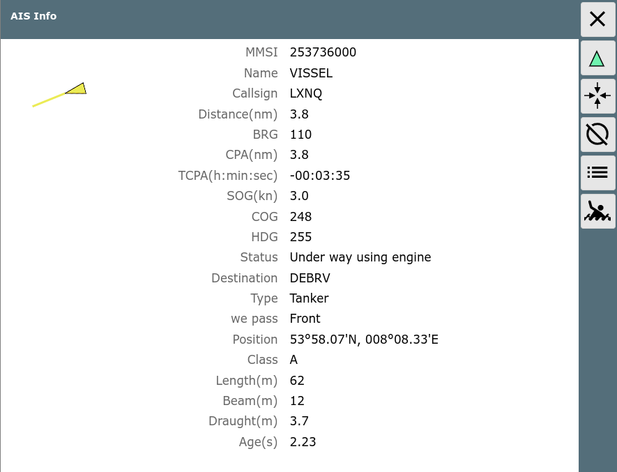

This page will be displayed when clicking the AIS widget on the navigation page or a dashboard page - or by clicking an AIS target on the chart.
Details for the AIS target are shown.
Buttons
| Icon | Name | Function |
| AisNearest |
center to the closest target and display it on the
navigation page |
|
| AisInfoLocate |
center the chart to this target an display its data on the navigation
page |
|
| AisInfoList |
display the list of all AIS targets |
|
| MOB |
man over board (see main page) |
|
| Cancel |
back to previous page |